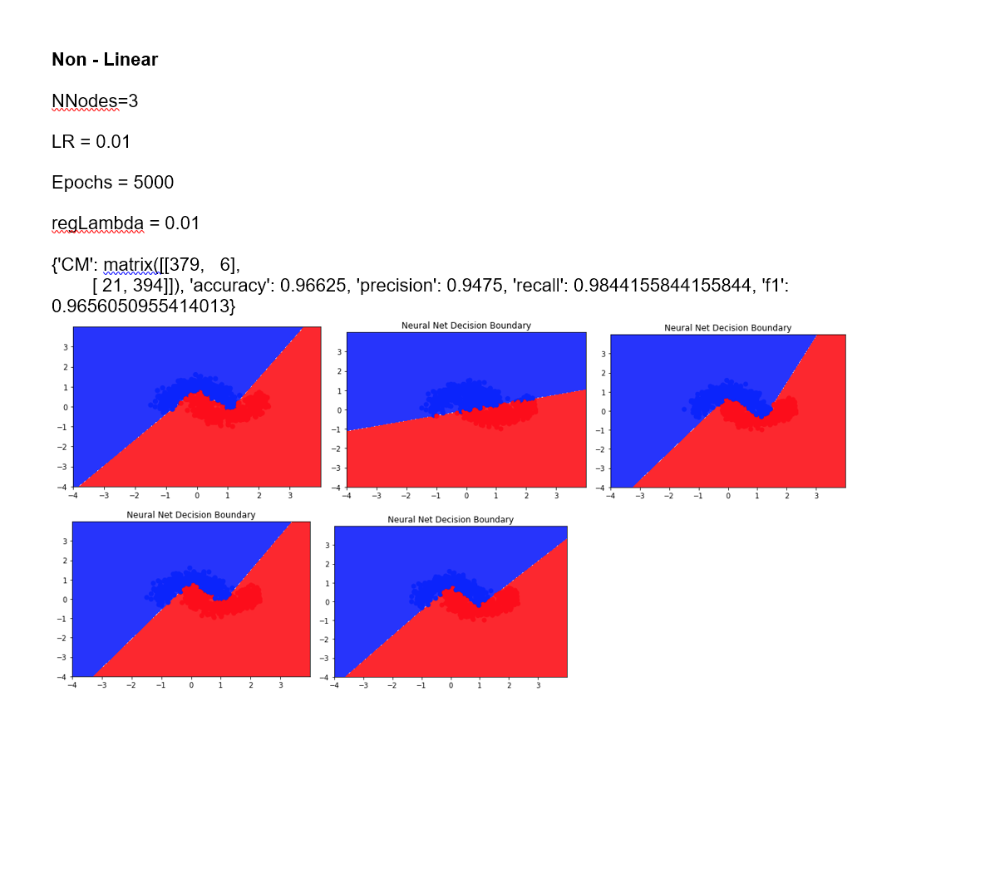

Problem Definition
The goal of this assignment is train two data sets. The first is a linear data set and the second is non-linear. We are supposed to train a neural net model on these data sets in order to classify the data itself. The neural network is composed of one input layer, one hidden layer with a modifiable number of neurons, and an output layer. The tan activation function is used in combination with forward and backpropagation to train the network. The result is useful because it will result in an accurate neural network, capable of processing and classifying linear and non-linear data. The primary issue that could be run into for this neural network is the learning rate resulting in a divergence and never converging properly with the gradient descenet utilizing the cross-entropy error function. However this is circumvented through changing the learning rate to see which one works best.
Method and Implementation
We utilized the tan activation function to activate our neural network. We used backpropagation with running forward propagation once and then backpropagation afterwards, updating the weights each time the epoch was run. We utilized the following parameters: learning rate, number of epochs, lambda regularization, and number of neurons. All of these were changed in order to see the efficacy of our network.
We created the forward and backpropagation functions. The forward progation function multiplied our weights by the neurons. The first forward propagation did it with our input and hidden neuron layers. Then the second forward propagation did it with the hidden layer and the output layer. Backpropagation was made with running forward propagation once and then taking the derivate of the cost function. This was applied to the weights in combination with the learning rate in order to train the network. There were two outputs so we used the softmax function to predict the outcome. Finally, we trained and tested the network with our tran and test functions by splitting it up into 5 K-folds, training 4 and testing 1.
Experiments
In our experiments, we changed the epoch number, learning rate, lambda regularization, and the number of nodes. Only one of these parameters was changed at a time while keeping the others constant.
We evaluated our network through the confusion matrix function. This calculated accuracy, precision, recall, and the F1 score. For Accuracy, we summed the True Positiove and the True Negative, dividing it over the sum of entire confusion matrix. For Precision we divided the True Positive by the sum of the True Positive and the False Negative. For precision we divide the True Positive by the sum of the True Positive and the False Positive. Finally, the F1 score was calculated by 2*Recall*Precision divided by the sum of Recall and Precision.
Results
List your experimental results. Provide examples of input images and output images. If relevant, you may provide images showing any intermediate steps. If your work involves videos, do not submit the videos but only links to them.
Results | ||
| Trial | Source Image | Result Image |
| trial 1 |  |
 |
| trial 2 |  |  |
| trial 3 |  |
 |
 |
||
 |
||
 |
 |
|
 |
 |
|
 |
||
 |
||
 |
||
 |
||
 |
 |
|
 |
||
Discussion
- The primary strength of our neural network is its ability to accurately classify the data with the best accuracy rate of 97.8%. The tanh activation function was used because the sigmoidal function can cause a neural network to get stuck during training. This is due to strong negative inputs outputing a value near zero. Consequently, the forward propagation does not get updated as often.
- As shown in our figures. The method that we utilized is consistently successful. What we expect to find is that backpropagation training with our activation function would be very successful. Our results confirm this based on our figures and our general accuracy with the learning rates.
- In the linear data we found that using 3 neurons was good. Based on the parameters, the accuracy was 93.5%, precision was 94.87%, and the F1 score was 93.5%. What we see in the non-linear set is that increasing the number of neurons does not change the scores very much.
- In the non-linear data, we see that there was a small increase in scores as the number of neurons were increased. As seen, when the number of nodes is equal to 3, the F1 score is 96.6% and when the number of neurons is equal to 10, the F1 score was 97.23%. This was due to how backpropagation works.
- Changing the lambda regularization term within the network resulted in a gradual decrease of scores. This is because the lamda regularization term helps avoid overfitting. A good lamda regularization value was 0.01. Any higher and it decreased scores.
- the learning rate was hard to determine but we ultimately went with .01 and it resulted in a good NN. Accuracy was 96.25%, Precision was 93.93%, recall was 98.7%, and the F1 score was 96.26%. though increasing the learning rate to .15 made the NN unabe to learn due to the gradient descent jumping around a bunch.
- increasing the value of epoches increased our scores slightly. the confusion amtrix for 5000 epoches has a 96.8% accuracy , 99.7 precision, and a F1 score of 96.8%. this increases an F1 score of 97.3%. if this NN was sclaed to have more inputs we would need more epoches to train, but would probably not need them due to the use of the tanh function.
- In terms of time cost, the number of epochs increase the total time it takes to compute the output. As discussed previously, this ends up being an issue because the more epochs you have, the return of time investment is not worth it for small increases in the confusion matrix scores. Changing the learning rate will have an impact on time cost, if it is too small, it will take a long time to reach the global minimum, but if it is too large it will diverge. Therefore, finding the ideal learning rate is necessary.
- Overall, our method is generally successful for both linear and non-linear. We expected very good scores which is what happened. The one thing that was unexpected was the change in the number of neurons not having a big difference. It was surprising, but it might be due to the fact that we do not have a ton of data in general.
- overall i would have appreciated a bit more direction when working on this as i foudn my self stuck multiple times not sure what to do. in terms of what i would improve i would probably want the code to run a bit faster.
Conclusions
Based on what was mentioned in the discussion, our main conclusion is that the primary parameter that makes or breaks a neural network is the learning rate. This is crucial in establishing an accurate and precise neural network. The speed at which our neural network trains is ideal for large data processing. i would also like to work more with neural networks and try to do something applicable to real world with this.
Credits and Bibliography